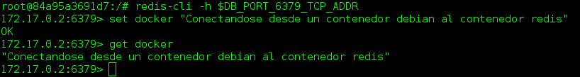

Crear una imagen Docker de Redis
Posted on Sat 16 July 2016 in Tutorial de Docker • 3 min read
Redis es un motor de base de datos en memoria, basado en almacenamiento en tablas hash(clave/valor) (tomado de wikipedia).
En este artículo se construirá la imagen de Redis a partir de una imagen base de Debian, el artículo se basa en un artículo en inglés del sitio de Docker.
Para subir la imagen a docker hub se sigue el artículo de uso de docker en debian jessie parte 1.
Los artículos anteriores sobre Docker son:
-
Iniciando Django con docker usando docker-compose con postgresql como microservicio.
-
Crear un entorno de Integración y Despligue continue con Docker para node.js.
-
Ejecutar una prueba de unittest en Python con un contenedor Docker.
-
Montar una Plataforma como servicio (PaaS) con Dokku (docker).
-
Instalar Jenkins por medio de Docker y crear una imagen Docker de Jenkins
-
Crear un contenedor Docker como entorno de desarrollo para Sails.js.
-
Correr aplicaciones de escritorio desde un contenedor Docker.
-
Usar dockerui para la gestión de imágenes y contenedores de Docker
-
Crear datos JSON a partir de un diccionario en Flask (parte 1) (actualización- Docker)
El archivo Dockerfile contendrá lo siguiente:
#Se usa debian como imagen base
FROM debian
#Se define el mantenedor de la imagen
MAINTAINER Ernesto Crespo <ecrespo@gmail.com>
#Se actualiza la lista de paquetes
RUN apt-get update
#Se instala redis-server y redis-tools
RUN apt-get install -y redis-server redis-tools
#Se limpia la cache de paquetes deb
RUN apt-get clean
#Se expone el puerto 6379
EXPOSE 6379
#Inicio del servicio redis
ENTRYPOINT ["/usr/bin/redis-server"]
Ahora se consruye la imagen (asociandolo a mi cuenta de docker hub):
docker build -t ecrespo/redis .
Se listan las imágenes:
docker images
REPOSITORY TAG IMAGE ID CREATED SIZE
ecrespo/redis latest 841b6e9266f8 3 minutes ago 136.9 MB
redis latest 4465e4bcad80 4 weeks ago 185.7 MB
debian latest 1b088884749b 5 weeks ago 125.1 MB
Correr el servicio ejecutando:
docker run --name redis -d --restart always -p 6379:6379 ecrespo/redis
Al listar los procesos se tiene redis corriendo:
docker ps
CONTAINER ID IMAGE COMMAND CREATED STATUS PORTS NAMES
0af1cdf134d7 ecrespo/redis "/usr/bin/redis-serve" 9 seconds ago Up 4 seconds 0.0.0.0:6379->6379/tcp redis
Para probar redis se instala en el equipo redis-tools:
#apt-get install redis-tools
Desde la línea de comandos se ejecuta redis-cli, a continuación se muestra una figura del ejemplo:

Se hace un commit con el contendor de redis que está corriendo:
docker commit 0af1cdf134d7 ecrespo/redis
Luego se sube a docker hub:
docker push ecrespo/redis
Ahora se creará un contenedor para la aplicación, se enlazará el contenedor redis con el contenedor cliente:
docker run --link redis:db -i -t debian /bin/bash
Dentro del contenedor se ejecutan los siguientes comandos:
apt-get update
apt-get install redis-tools
service redis-server stop
Como se enlazó el contenedor actual con el contenedor de redis, este contenedor contiene unas variables de ambiente, para visualizarlas se ejecuta el siguiente comando:
env | grep DB_
DB_NAME=/tiny_poincare/db
DB_PORT_6379_TCP_PORT=6379
DB_PORT=tcp://172.17.0.2:6379
DB_PORT_6379_TCP=tcp://172.17.0.2:6379
DB_PORT_6379_TCP_ADDR=172.17.0.2
DB_PORT_6379_TCP_PROTO=tcp
Para conectarse desde el contenedor que corre Debian al de redis se ejecuta:
redis-cli -h $DB_PORT_6379_TCP_ADDR
172.17.0.2:6379> set docker "Conectandose desde un contenedor debian al contenedor redis"
OK
172.17.0.2:6379> get docker
"Conectandose desde un contenedor debian al contenedor redis"
172.17.0.2:6379>
A continuación se muestra una figura de la ejecución:

Y se listan los contenedores ejecutándose:

¡Haz tu donativo! Si te gustó el artículo puedes realizar un donativo con Bitcoin (BTC) usando la billetera digital de tu preferencia a la siguiente dirección: 17MtNybhdkA9GV3UNS6BTwPcuhjXoPrSzV
O Escaneando el código QR desde la billetera: